The problem hiding inside a spreadsheet
UPS had recently migrated to RedHat OpenShift to manage their containerized infrastructure. The platform handled the workloads — but it didn't help engineers make decisions about them. Every capacity question required manual calculations: pull data, run arithmetic, repeat for each cluster.
- No centralized view of fleet-wide cluster health across CPU, memory, and DASD storage
- Manual arithmetic required for every new workload proposal — one cluster at a time
- No growth projection model to anticipate when resources would hit their limits
- No way to run what-if scenarios without modifying live data
The risk wasn't just inefficiency — poorly analyzed capacity decisions could lead to overfitted clusters, performance degradation, and outages. The team needed a tool that moved capacity planning from reactive to proactive.
Stakeholders, personas, and what the tool actually needed to do
I led the Define phase — stakeholder mapping, persona development, requirements gathering, and scoping the site map before any design or development began. Two primary users emerged from our conversations with the UPS sponsors:
Derek — Platform Engineer
Day-to-day user. Needs to quickly check if a proposed workload fits a specific cluster, see what gets freed by removing workloads, and get a growth projection without doing the math himself.
Priya — Infrastructure Architect
Strategic decision-maker. Evaluates proposed changes across multiple clusters before approving them. Needs side-by-side scenario comparisons — not individual reports — to justify hardware procurement decisions.
From there I defined the four-module site map — confirmed with UPS sponsors before any code was written — and created the use case diagram mapping each user's path from login through the three analytical workflows.
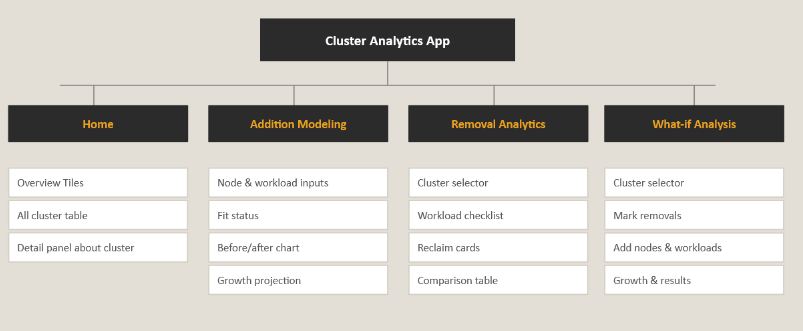
Site map: four modules scoped and approved by UPS sponsors before development began.
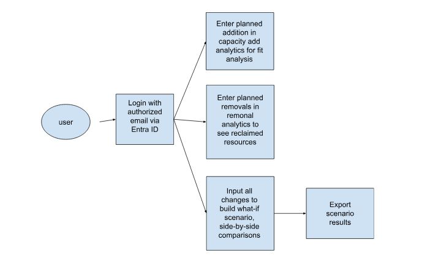
Use case diagram: login via Entra ID → addition, removal, or what-if analytical path → export scenario results.
From blank page to wireframes
With requirements confirmed, I moved into low-fidelity sketching. The central design question for every module: what does an engineer need to see first? The answer was always fit status — does this change work or not — before any supporting detail. I sketched all three analytical modules in detail, working out input structure and output hierarchy on paper before touching Figma.
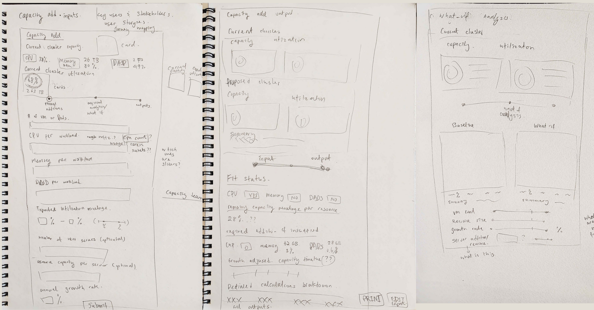
Early wireframe sketches covering Capacity Add inputs, output layouts, and the What-If Analysis module.
The What-If module required the most iteration. My original concept was a 4-step wizard — cluster selection, removal, addition, results — each on its own screen. Thorough, but too much friction. When the team later collapsed it to a single page during development, that was the opposite problem: too much to process at once, no sense of direction. The solution came from watching engineers actually try to use it:
- Step 1 — Configure: Select clusters, mark removals, add nodes and workloads. Everything you're doing lives here.
- Step 2 — Results: All outputs — charts, delta table, growth projection. Everything you're seeing lives here.
Simple enough to navigate quickly. Structured enough to feel intentional.
High-fidelity in Figma, approved by UPS in Sprint 2
I built the high-fidelity prototype in Figma and presented it to UPS sponsors for approval in Sprint 2. The visual language: UPS brand colors — dark brown navigation, amber accents, high-contrast utilization bars — with a light content area that kept dense data readable. Once approved, it served as the build spec for the engineering team.
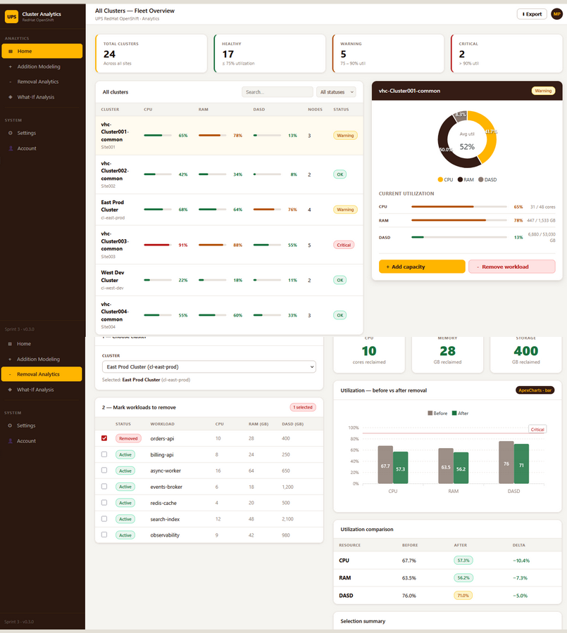
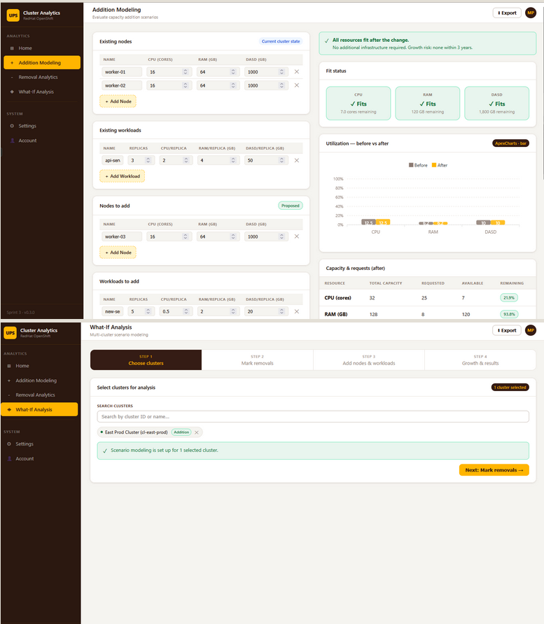
Hi-fi Figma prototype: fleet overview (left) and the addition modeling + what-if wizard screens (right) — presented to and approved by UPS stakeholders.
What shipped across 5 sprints
Once prototypes were approved, I implemented the frontend in Blazor/.NET 10 across the remaining sprints, working alongside the backend team to integrate live cluster data from the UPS Data Collection Team's API. ApexCharts powered all data visualizations.
Home — Fleet Overview
The command center. KPI tiles at the top show total clusters, healthy, warning, and critical counts at a glance. A searchable cluster table displays live CPU, RAM, and DASD utilization bars with color-coded status per row. Clicking any cluster opens a detail panel with current resource saturation and a 3-year growth projection chart.
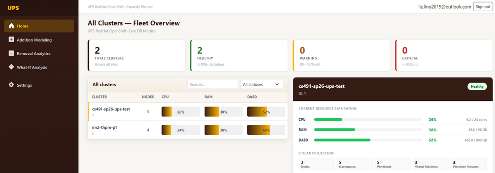
Fleet Overview — 24 total clusters, real-time health status, and utilization bars across CPU, RAM, and DASD.
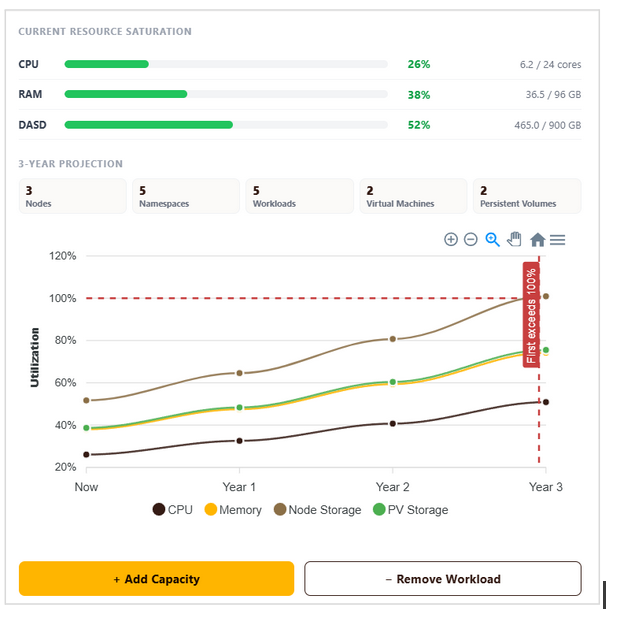
Cluster detail panel — current resource saturation with exact figures, plus a 3-year growth projection showing when resources approach exhaustion.
Addition Modeling
Engineers select a baseline cluster, enter existing and proposed nodes and workloads, set an annual growth rate, and generate results. The output returns fit status per resource (Fits / Watch / Critical), before vs. after utilization, remaining capacity figures, and a growth projection timeline.

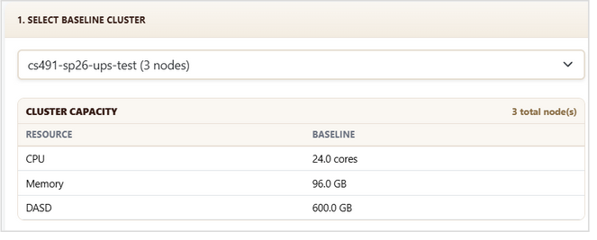
Addition Modeling: simulation parameters with no cluster selected (left), and cluster baseline capacity displayed after selection (right).

Results panel: fit status per resource, before/after utilization bars, remaining headroom, and growth projection timeline — all from a single "Generate" action.
Removal Analytics
Select a cluster, check workloads to remove, and instantly see the reclaimed CPU cores, memory, and storage. A utilization before/after comparison table and selection summary confirm the full impact — including CPU overcommit ratio and bottleneck identification.
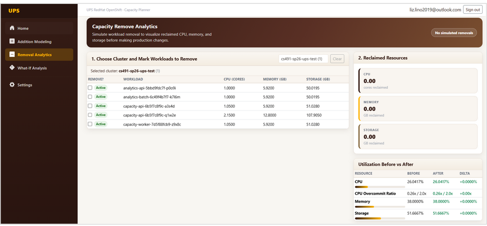
Removal Analytics: cluster selected with all active workloads listed — engineers check the ones they want to remove.
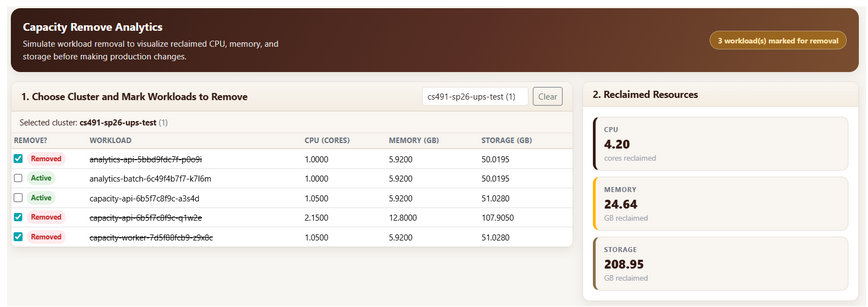
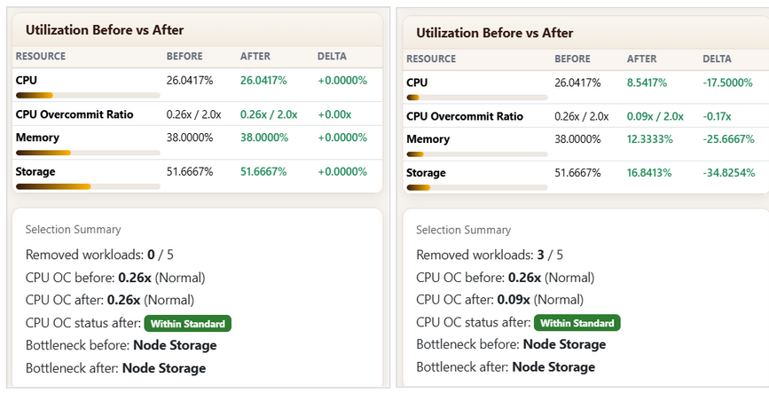
Three workloads marked for removal — 4.20 CPU cores, 24.64 GB memory, and 208.95 GB storage reclaimed (left). Before vs. after utilization and selection summary (right).
What-If Analysis — 2-step wizard
The most complex module, and the one that iterated the most. Step 1 consolidates all inputs: search and add clusters, mark workloads for removal, add new nodes and workloads. "Apply to All" propagates additions across all selected clusters simultaneously. Step 2 surfaces all results: grouped utilization by stage, requested vs. remaining charts, a 10-year growth projection with first-exhaustion year flagged, and a full delta comparison table. Exportable as PDF.
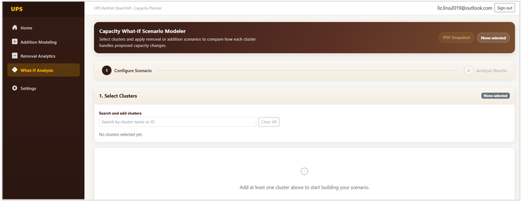
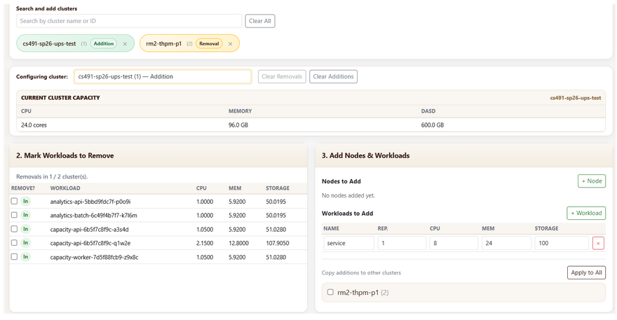
What-If Step 1: empty state (left) and a fully configured scenario across two clusters — one with additions, one with removals applied (right).
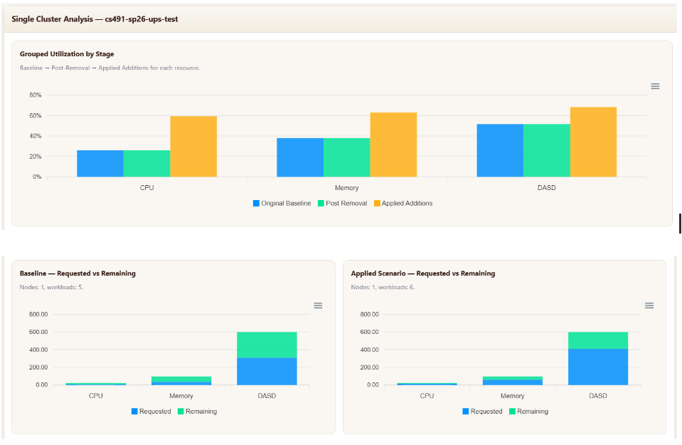
Step 2 results — grouped utilization showing original baseline → post-removal → applied additions for CPU, Memory, and DASD side by side.
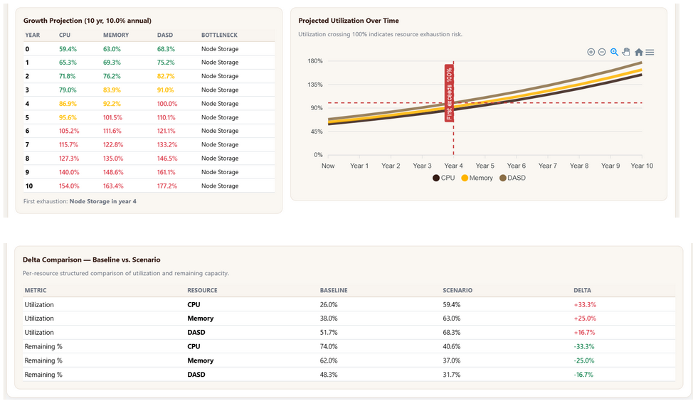
10-year projected utilization with first-exhaustion flagged at Year 4, and a full delta comparison table: baseline vs. scenario per resource.
Presented at the NJIT capstone showcase — 1st place in our category
The completed platform was presented to UPS sponsors and NJIT faculty in April 2026. The tool delivered on every core requirement — and then some.
- Multi-cluster capacity analysis reduced from hours to minutes
- Growth projections up to 10 years with configurable annual growth rate
- Engineers can test scenarios non-destructively before any production change request
- PDF export for documentation and stakeholder review
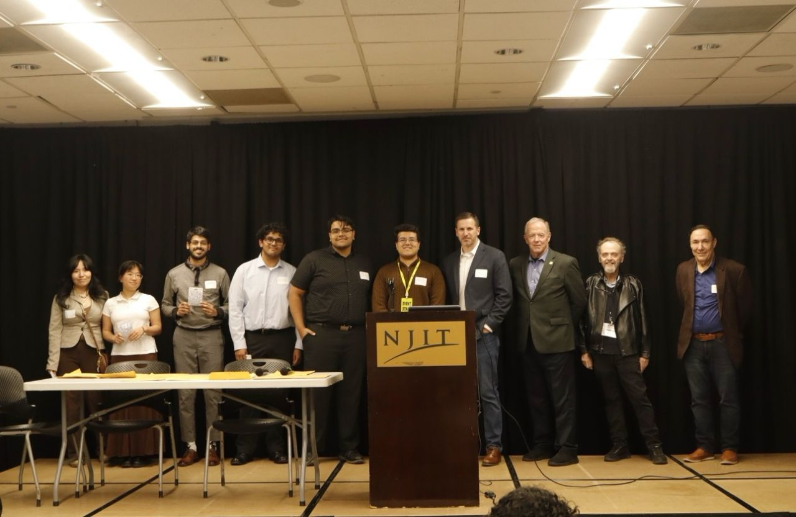
The full team with UPS sponsors and NJIT faculty at the Spring 2026 capstone showcase — where we took 1st place in our category.
What this project taught me
The What-If pivot was the most important design lesson. I designed a 4-step wizard; the team built a single page; neither worked. The 2-step version came from watching a real engineer try to use it — not from revisiting the wireframe. That feedback loop is irreplaceable, and I'd build it into the process much earlier next time.
Designing for trust, not just clarity. Every utilization bar and delta percentage in this tool carries real weight. Engineers use these numbers to justify procurement decisions. That meant obsessing over precision, making data sources legible, and never showing a result without the inputs that produced it — so nothing felt like a black box.
Being the design-to-engineering bridge. As the only person responsible for both UX and frontend implementation, I was the translation layer between what the experience needed and what Blazor could render. That dual role made me a sharper designer — I stopped proposing things I couldn't build — and a more intentional developer.